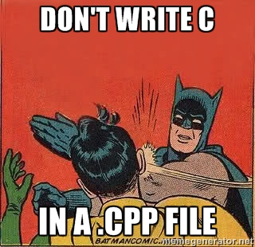

ReCpp
Re-introdcution to C++ (Modern)
Created by Jatin Dhankhar / @jatindhankhar_
C++ is not C with classes
C++ is beautiful and it makes me sad that people don't use it the modern way. They write C with classes 
Don't
- Raw Pointers
char[]- strlen
- Legacy from C
- Self coded algorithms and containers
Don't char* str = new char[1024];
Do std::string str;
History to Bore/engage people ?
“C++11 feels like a new language.” – Bjarne Stroustrup
Our Targets
- Vectors
- Auto
- Inbuilt Algorithms
- Inbuilt Containers
- Ranges
- Lambdas
Headaches and Aspirin - Trimmed Quote
One of the worst things you can do is force people who don’t feel pain to take your aspirin. Math shouldn’t feel pointless. Math isn’t pointless. It may not have a point in job [y] or [z] but math has a point in math. We invented new math to resolve the limitations of old math. My challenge to all of us here is, before you offer students the new, more powerful math, put them in a place to experience the limitations of the older, less powerful math. - Dan Meyer
Vectors
Dynamic Arrays
std::vector
Auto
auto
One word to rule them all?
Range based for loops
for(auto el : container) process(el);

DRY - Don't repeat yourself
Learn Ranges and Lambdas before (they are next)
- Sort
- Count
- Copy
- Find
std::algorithm
Range
[begin,end)
Lambdas - Ultimate Beauty
[](){}

Call me maybe ?
Take a Moment
It was just a (gentle?) re-introduction many things were not discussed in detail (smart pointet,move semantics,TMP). It was a just a tip of Iceberg? Keep Learning. Found any mistake, correct me, maybe?